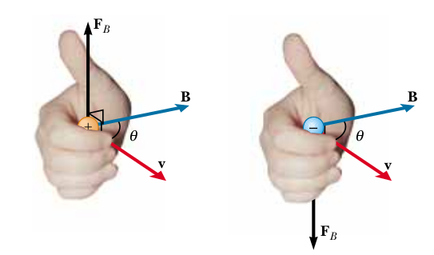

Elektrik ve Manyetik Etkileşimler - Ders 19
Ekler
Bu dersin orijinal içeriğini atlıyoruz, kendi topladığımız materyeli sunacağız. Elektromanyetik etkiyi anlatmak için özel izafiyetten bahsetmek gerekiyor.
Manyetik Alanı Oluşturan Nedir?
Elektrik alanı ölçmek için yapılan $\vec{E}$'yi bir yük $q$'yü durur halde koymak, ve onun üzerindeki elektrik kuvvet $\vec{F}_E$'yi ölçmektir. Ardindan $\vec{E}$
$$ \vec{E} = \frac{\vec{F}_E}{q} $$
olarak tanımlandı, yani birim yükün hissettiği elektrik kuvveti. Fakat manyetik bağlamda bu deney işlememiştir. Manyetik alan $\vec{B}$'yi bulmak için hareket halindeki parçacıklar gerekmiştir. Deneyde parçacık farklı yönlerine, $\vec{v}$, ile ateşlenir ve onun hissettiği $\vec{F}_B$ ölçülür. Pek çok deney ardından özel bir yönde / eksende $\vec{F}_B$'nin sıfır olduğu görülmüştür. Ayrıca $\vec{F}_B$'nin yönünün her zaman $\vec{v}$'nin yönüne dik olduğu görülmüştür.
Ayrıca $\vec{F}_B$'nin büyüklüğünün her zaman $v \sin\phi$'ye oranlı olduğu görülmüştür, ki $\phi$ açısı sıfır-kuvvet ekseni ile gidilen yön $\vec{v}$'nin arasındaki açıdır (bu durum tabii ki nihai kanunda bir çapraz çarpım olabileceğini bize tiyolamış olur). O zaman manyetik alan $\vec{B}$'yi o bahsettiğimiz sıfır-kuvvet yönü olarak tanımlayabiliriz. Özet olarak alttaki formül yazılabilir [1, sf. 805],
$$ \vec{F}_B = q \vec{v} \times \vec{B} $$
Formül diyor ki yükün hissetiği $\vec{F}_B$ yük miktarı $q$ çarpı yükün hızı $\vec{v}$ ve alan $\vec{B}$'nin çapraz çarpımına eşittir (aynı referans çerçevesi, kordinat sistemı içinde). Eğer temel vektör aritmetiğini hatırlarsak, $\vec{a}$ ve $\vec{b}$'nin çapraz çarpımı bir üçüncü $\vec{c}$ veriyordu ve bu vektörün büyüklüğü
$$ c = a b \sin \phi $$
formülüne eşitti. Aynı şeyi manyetik kuvvet için kullanabiliriz,
$$ F_B = |q| v V \sin\phi $$
Sağ el kuralı faydalı olabilir [2, sf. 908],

Eğer pozitif bir yükü tutuyorsak elin içi $\vec{v}$'yi gösteriyor, kıvrılmış parmaklar $\vec{B}$'yi gösteriyorsa, o zaman başparmağı $\vec{F}_B$'yi gösterir. Negatif yük tutuyorsak $\vec{F}_B$ ters yöndedir. Aslında bu el kuralları dikgenliği göstermenin bir diğer yolu, $\vec{B}$ ve $\vec{v}$ bir düzlem oluşturuyor da diyebilirdik ve bu düzlemin normali bahsedilen çapraz çarpım ile hesaplanır ve o normal $\vec{F}_B$'nin ta kendisidir.
Alttaki örnekte kuvvet yönünü yine görüyoruz. Solda manyetik bir alan oluşturulmuş bir alan N kutbundan S kutbuna gidiyor, 2., 3. ve 4. resimde ilk resimdeki mavi oklar açısından baktığımız düşünüyoruz, elektrik akışı (yükler) kabloda yukarı doğru, bu durumda kablo 3. resimde görüldüğü şekilde sola doğru çekilecektir. Eğer elektrik akışı ters yönde olursa kablo sağa çekilecektir.

İzafiyet
Einstein'ın buluşu izafiyete göre evrenimizde uzunluk ve zaman mutlak değildir, bakış açısına göre izafidir, birbirine göre farklı şekillerde hareket eden kişiler farklı zaman ve obje büyüklüklerini gözlemleyebilirler. Altta yari saka olarak [3] programinda sunucu yanindan hizla gecen bir arabanin kuculdugunu goruyor.
Bu etki her ne kadar çok, çok cüzi olsa da elektromıknatısların işlemesini sağlayan prensip budur.
Bir bakır kablo düşünelim, pozitif yükleri ve negatif elektronları var. Bunlar dengede olduğu kablo nötr durumda olacaktır ve yakında duran pozitif yüklü bir kedi hiçbir kuvvet hissetmeyecektir. Negatif yuk akiyor olsa bile bu durum degismez, cunku toplam yuk hala notr.

Fakat kediyi elektronlar ile aynı yönde yakın hızda hareket ettirsem ne olur? İzafiyete göre kedinin bakış açısına göre elektronlar hareket etmiyor, ama pozitif yükler hareket ediyor. Hareket eden şey kısalır, yoğunluğu artar, duran ise daha geniştir. Bu durumda kedi ona göre daha "yoğun" olan pozitif yükler tarafından, kablodaki dengenin değişmiş olması sebebiyle, itilir! Halbuki kabloda atomik hiçbir değişim olmadı. Sadece kediyi hareket ettirdik.

İlginç değil mi? Sunucunun bakış açısına göre bu acaip, hareketsiz kedi itilmiyor, ama hareket eden kedi kabloya dik olarak (dik kuvvetin nereden geldiğini böylece anlamış oluyoruz) itiliyor. İşte manyetik kuvvet denen şey aslında budur.

Kaynaklar
[1] Resnick, Fundamentals of Physics, 10th Edition
[2] Resnick, Fundamentals of Physics, 8th Edition
[3] Veritasum, How Special Relativity Makes Magnets Work, https://www.youtube.com/watch?v=1TKSfAkWWN0
Yukarı